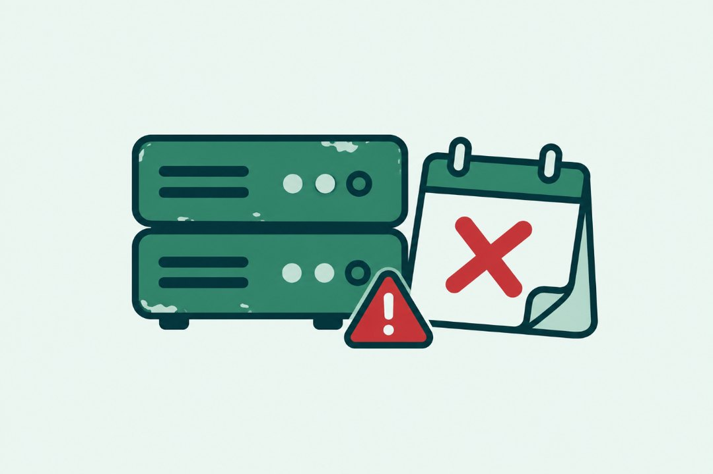

PHPのサポート終了とは？放置したホームページに起きることと確認方法
2026.11.02 PHP・サーバー

PHPは、WordPressをはじめ多くのホームページを動かしているプログラムの言語です。PHPにはバージョンごとに「サポート期間」があり、期間が終わると、新しく見つかった弱点が直されなくなります。この記事では、サポート終了の意味と、放置したサイトに起きること、自分のサイトのバージョンを確かめる方法をまとめます。
PHPのサポート終了とは
PHPの各バージョンは、公開からおよそ2年間は不具合と弱点の両方が直され、その後のおよそ2年間は弱点の修正だけが続きます。その期間が終わった状態が「サポート終了」です。
| バージョン | 弱点の修正が続く期限 | 状態（2026年10月時点） |
|---|---|---|
| 7.4 | 2022年11月28日 | サポート終了 |
| 8.0 | 2023年11月26日 | サポート終了 |
| 8.1 | 2025年12月31日 | サポート終了 |
| 8.2 | 2026年12月31日 | 弱点の修正のみ（まもなく終了） |
| 8.3 | 2027年12月31日 | 弱点の修正のみ |
| 8.4 | 2028年12月31日 | 通常のサポート中 |
| 8.5 | 2029年12月31日 | 通常のサポート中 |
出典：PHP公式サイト「Supported Versions」「Unsupported Branches」（2026年10月に確認）
放置したホームページに起きること
新しい弱点が直されない
サポートが終わったバージョンで弱点が見つかっても、修正版は出ません。攻撃の方法が広まったあとも、そのサイトは弱点を抱えたまま動き続けます。
プラグインやWordPress本体を更新できなくなる
新しいWordPressやプラグインは、古いPHPを対象から外していきます。PHPが古いままだと、本体やプラグインの更新も止まり、弱点が重なっていきます。
表示が崩れる・動かなくなる
サーバー会社が古いPHPの提供を終えると、自動で新しいバージョンに切り替わることがあります。準備をしていないと、その日を境にサイトが表示されなくなることもあります。
自分のサイトのPHPのバージョンを確かめる方法
- レンタルサーバーの管理画面で、ドメインごとのPHPのバージョンを見る
- WordPressの管理画面の「ツール」→「サイトヘルス」→「情報」→「サーバー」を見る
- 管理画面に入れない場合は、サイトドックの無料簡易診断で外から確かめる
外からバージョンが読めないように設定されているサイトもあります。その場合は、1か2の方法で確かめてください。
バージョンを上げる前に確認すること
- サイト全体のバックアップを取る
- WordPress本体、プラグイン、テーマを先に最新にする
- 配布が終わったプラグインがないか確かめる
- 切り替えたあと、トップページ、お問い合わせフォーム、管理画面を確かめる
表示が崩れたときにすぐ元のバージョンへ戻せるよう、作業はアクセスの少ない時間に行います。
URLを入れるだけで、PHPのバージョンを含む7項目を数十秒で判定します。登録はいりません。
無料で診断するまとめ
PHPのサポートが終わると、弱点が直されず、ほかの更新も止まっていきます。まずは今のバージョンを確かめ、8.3以降への更新を計画してください。作業に不安があれば、対策作業でお手伝いします。
狙われる前に、弱点をふさぐ。
URLを入れるだけで、数十秒で判定が出ます。登録はいりません。